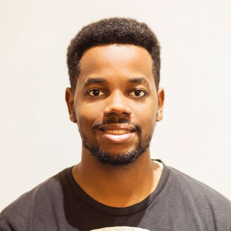

Lleir Esteves-Garcia | WDD130
Hi! My name is Lleir Esteves-Garcia Mochi. I live in Barcelona, I was born there in spain, my parents are from Equatorial Guinea, Africa. My wife is from Honduras and we have 1 daughter of 6 years old and a boy of 2 years old, so a little bit international family.
My wife is a photographer and loves travel, so we go all together traveling in so many places!
I studied Advanced Technician in Multiplatform Application Development this is something that it's in spain and I've been working as a technician 9 years and Associate Software Engineering over 5 years.
Informatic by profession and vocation. I like being up to date with new technologies and I don't get tired of researching and innovating with new functions since I like to find ways to develop new projects. In my house I have like automotion house, like 3 servers, and a lot cool staff for playing, that my wife looks at me like a crazy technologic guy, but at least it's how I could make her fall in love :) (Because I made an excuse, to go fix her computer, to know her better).
Since I've been called as a bishop in 2018 with 29 years old and with a little children, I look to my pass as a Young Adult and I felt a big impression to help the Young Adult in my ward that are like 25 more or less, to keep improving in their lives (here in spain, when you are young without experiences even you had studied a lot of thing, most of them doesn't contract you), so I asked in the stake about the BYU Pathway program how it works, but most of the people didn't know how really works, so I'm that kind of people that need to have the experience by myself, so I get enrolled in BYU Pathway, just to help all the Young Adult how to do it, what they need know and everything. So when I finished I saw the potential of this program, and the confirmation to my prompting, that I encouraged all the Young Adult to get enrolled and almost 10 or 12 got enrolled.
So Finally I saw the potential of all this program so I said, let's go to being a big example and finish everything! So, here I am!
Now I'm part of the stake presidency since 2021 so I said let's finish it.